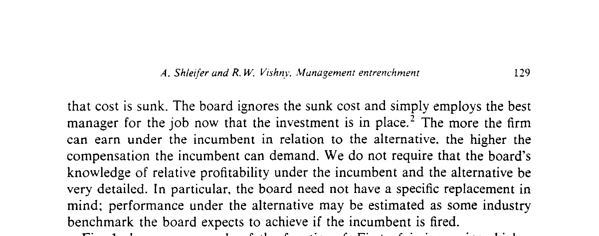
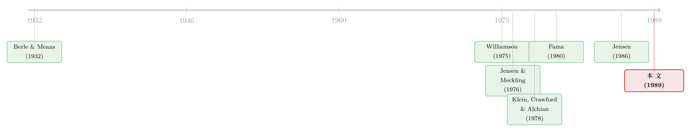

老板把公司的钱，花成了自己的护城河
本文读的是 Shleifer & Vishny (1989, JFE)：经理人会用股东的钱，去投资那些「只有他自己最会经营」的资产（作者称之为 manager-specific investment），从而把自己变得既值钱又难以替换。结果是系统性的过度投资——不是为了把公司做大，而是为了把替换自己的成本做高，进而从董事会手里榨取更高的薪酬与更大的自由裁量权。
1 一个反直觉的开场
先讲一个秘书的故事。
一位秘书，可以把文件和电脑里的资料整理得井井有条、人人都能接手；她也可以反其道而行——用一套只有她自己看得懂的方式建档、命名、归类。第二种做法对公司毫无额外好处，却让她变得「无可替代」：一旦她走人，没人能在三天内把这堆资料理清楚。于是她获得了更稳的饭碗、更大的话语权。
她做的，是一笔典型的「manager-specific investment」——用雇主的资源，把自己变成了瓶颈。
把这位秘书换成 CEO，把建档方式换成一条铁路的资本开支、一次溢价收购、一份靠个人信誉撑着的隐性合同，故事就从办公室搬进了公司金融的核心。这正是 Shleifer 和 Vishny 在 1989 年这篇论文里要讲的事：管理层壕沟 (managerial entrenchment)，本质上是一种投资行为。
这个视角之所以值得停下来想一想，是因为它把「经理人为什么爱乱花钱」这个老问题，给了一个出乎意料的答案。
2 先看老答案：经理人为什么乱花钱
代理问题不是新话题。从 Berle and Means (1932) 到 Jensen and Meckling (1976)，再到 Jensen (1986) 的自由现金流假说，主线一直很清楚：经理人是股东的代理人，他手里攥着不属于自己的钱，于是有动机去消费在职津贴、做毁灭价值的多元化、抵抗能让股东发财的敌意收购。（关于自由现金流这条线，可参见《现金为什么一定要「还」出去？——四十年后，重读 Jensen 的自由现金流》。）
这些解释都把焦点放在经理人的目的上——是图名、图利，还是图享受？
但本文一上来就声明：我们不问经理人到底想要什么。 财富也好、名声也好、专机也好，那是动机问题。本文要问的是另一件更底层的事——
经理人该如何给自己卡好位，才有能力去追求那些目的？
换句话说，在「想乱花钱」和「能乱花钱」之间，隔着一道门槛：你得先让股东离不开你。壕沟，就是跨过这道门槛的方式。这个转向看似微小，却把分析的重心从「偏好」挪到了「能力」，而能力是可以被投资出来的。
3 关键的反转：别人投得太少，他却投得太多
接着，一个自然的问题是：用资产的「专用性」来谈代理问题，前人难道没做过吗？
做过，而且是大名鼎鼎的一支。Williamson (1975)、Klein, Crawford, and Alchian (1978) 这一脉的「关系专用性资产 (relationship-specific assets)」理论早就指出：当合同不完备时，谁先投入了专用性资产，谁就会被对方「敲竹杠 (holdup)」。为了避免事后被宰，理性的一方会减少对专用性资产的投资——投得太少，于是产生效率损失。
这里就出现了本文最漂亮的一处反转。
在 Williamson 的世界里，专用性资产的投资者投得太少；而在本文的世界里，经理人对自己专用的资产投得太多。
为什么方向恰好相反？理由简单得令人莞尔——
因为他花的是股东的钱，不是自己的钱。
在关系专用性资产的故事里，投资者用自己的钱投资，怕被敲竹杠，所以缩手；在壕沟的故事里，经理人用公司的钱投资，投得越多，股东被他「绑」得越牢，他越能反过来敲股东的竹杠。同一个「专用性」的逻辑，因为谁出钱这一个变量翻转，结论就整个掉了个头。这是全文的题眼。
4 模型：把「壕沟」写成一道求最优的题
要把上面的直觉讲死，得动用模型。本文的模型不长，但每一步都精确，值得一步步推。
设定。 用 \(I_{inc}\) 表示在任经理（incumbent）做的 manager-specific 投资。在支付薪酬之前，公司在他手下的价值为
$$V_{inc} = \alpha_{inc} \cdot B(I_{inc}) - p \cdot I_{inc}$$
其中 \(\alpha_{inc}\) 度量在任者经营这项投资的能力，\(B(I_{inc})\) 是单位能力下变动利润的现值，\(p\) 是单位投资成本。函数 \(B\) 满足 \(B' > 0,\; B'' < 0\)，且 \(\lim B' = 0\)（边际报酬递减，且最终趋于零）。
如果换成替代经理（alternative），公司价值（同样在支付薪酬前）变为
$$V_{alt} = \alpha_{alt} \cdot B(I_{inc} + I_{alt}) - p \cdot (I_{inc} + I_{alt})$$
这里 \(\alpha_{alt}\) 是替代者的能力，\(I_{alt}\) 是他会追加的投资。
两条关键假设。 第一，投资不可逆：
$$I_{alt} \ge 0$$
为简化，假设资产只能以零价格变卖——你买进来的专用性设备，泼出去的水，收不回来。
第二，投资是 manager-specific 的，意味着在任者比替代者更会经营它，即 \(\alpha_{inc} > \alpha_{alt}\)。这条假设保证：在任者每多投一块钱的专用性资产，他与替代者之间的利润差就被拉大一分。
薪酬怎么定？ 这是机制的发动机。薪酬在投资已经沉没之后，由经理与董事会谈判决定，而且只取决于「在任者能创造的利润」相对「替代者能创造的利润」的差额：
$$w = f\big(\alpha_{inc} B(I_{inc}) - \alpha_{alt} B(I_{inc} + I_{alt})\big)$$
注意，\(w\) 不依赖投资的成本——因为谈判时成本早已是沉没成本，董事会只会「向前看」，留用当下最划算的那个人。Figure 1 画出了这个 \(f\) 的样子：它单调递增（相对利润越高，能要到的薪酬越高）；但在某个点 \(-C\) 以下取值为零——\(C\) 度量董事会的「宽容度」与监督松弛程度。\(C\) 越大，董事会越被动；当替代者预期能比在任者多赚出 \(C\) 以上的利润时，在任者才会被解雇。

Figure 1: shows an example of the function f. First, f is increasing: higher
经理人的目标。 在均衡里，不可逆约束对替代者是紧的，故 \(I_{alt} = 0\)。在任者选择 \(I_{inc}\) 来最大化「作为股东的那份价值 + 谈来的薪酬」，其中 \(\beta\) 是他的持股比例，且假设 \(\beta \ll 1\)（持股很少，所以他几乎不内部化自己挥霍掉的公司价值）。
两个一阶条件，一个核心结论。 先看（在支付薪酬前）价值最大化的投资 \(I^*\)，它满足
$$B'(I^*) = \frac{p}{\alpha_{inc}}$$
这是「为股东着想」该投的量。再看经理人个人最优的一阶条件：
直觉是这样的：在价值最大化的 \(I^*\) 处，由于在任者比替代者更会经营，替代者的利润对 \(I\) 已经开始下降，而在任者的利润恰好持平（因为 \(B'(I^*)=p/\alpha_{inc}\)）。这意味着两人的利润差、也就是在任者的薪酬，在 \(I^*\) 处还在上升。于是经理人有动机继续投，一路投到 \(I^*\) 之上。
一句话记住这个结论：经理人会把投资推到价值最大化水平之上，多出来的那一截，买的不是利润，而是「壕沟」——他与潜在替代者之间那道越挖越深的利润鸿沟。
这也顺手解释了「经理人为什么爱增长」。在 Baumol (1959)、Marris (1964) 的传统里，增长本身就是目的；在本文里，单纯的增长不涨工资，只有在经理人擅长的方向上增长才行——因为只有那种增长才扩大专用性缺口。所以一家公司可能在 CEO 不擅长的领域投资不足、显得「太小」，却在他擅长的领域过度扩张。表面看像在最大化增长，实则在最大化壕沟。
5 两笔成本：一笔是社会的，一笔是股东的
然后，模型推出一个值得细究的区分：manager-specific 投资给股东带来两笔截然不同的成本。
第一笔：在薪酬给定的前提下，投资的水平和方向本就不是价值最大化的。这是一笔社会无效率——钱被烧在了错的地方。
第二笔：即便专用性投资创造了和别的投资一样多的（税前）股东价值，股东仍然受损——因为专用性让在任者能攫取更大一块「准租 (quasi-rents)」。这一笔只是从股东到经理人的转移，不一定是社会损失。
妙处在于：第二笔转移也许并不大（高管总薪酬相对公司价值常常很小），但为了攫取这一小笔租金而产生的过度投资扭曲，可以非常巨大。作者的类比很精彩——和所有寻租活动一样，追逐一笔不大的租金，足以造成一场巨大的低效。问题的根源，是经理人无法事前承诺「我事后不会宰你」。
6 从模型长出来的六个预言
一个好理论，要能伸到模型之外去预测现实。本文给出六条实证含义，每一条都直接从「壕沟即投资」的逻辑里长出来：
- 经理人会投资于与自己背景和经验相关的业务，即便这些投资对公司无利可图；
- 经理人倾向于把公司的合同做成隐性而非显性（因为隐性合同靠他个人的信誉背书，人走则约毁，从而把公司价值「绑」在他身上）；
- 剥离资产几乎总能提升市值，而收购却常常摧毁市值；
- 敌意收购常常伴随被收购公司的拆分（bust-up），且部分之和远高于整体；
- 多元化中收益最差的公司，往往处在衰退行业、且此前已跑输同业；竞标方若面对在标的行业更有经验的对手，损失会更大；
- 为了限制壕沟，即便内部资金充裕、外部融资便宜的公司，也会给下属事业部施加紧的资本预算约束，并在资本预算中使用高于市场的折现率。
第 2 条尤其有画面感：作者举了大导演斯皮尔伯格的例子——他曾威胁，如果好友、华纳 CEO 史蒂夫·罗斯离开，他就不再为华纳拍那些极赚钱的电影。于是罗斯成了「无可替代」的人，顺带一提，他是当时全美薪酬最高的 CEO 之一。这就是把客户、员工、供应商的忠诚「绑」到经理个人身上的隐性合同。它甚至能调和一个看似矛盾的现象 [Johnson et al. (1985)]：高管猝死能让股价大涨，同时解雇这位高管又不符合股东利益——因为他死后，公司继承了他的合同却省下了他的薪水；而若解雇他，他能带着靠个人信誉撑着的合同一起走。
第 6 条则把这套逻辑接回了内部资本市场：紧的资本预算和高的「门槛收益率 (hurdle rate)」，不只是谨慎，更是一种事前限制壕沟的治理工具。（关于事业部之间资金错配的代理根源，可参见《钱往哪个分部流，才算「肥水没流外人田」？》 与《好表现的奖励，不是奖金，而是「明天更大的盘子」》。）
7 文献脉络
把这篇论文放回它所在的坐标系，线索其实很清晰。
最上游，是 Berle and Means (1932) 提出的「所有权与控制权分离」，以及 Jensen and Meckling (1976) 把它形式化为代理成本——这条线关心的是经理人会不会偷懒、会不会乱花钱。与之平行的另一条线，是 Williamson (1975) 与 Klein, Crawford, and Alchian (1978) 的「专用性资产与敲竹杠」，关心的是专用性投资会被谁占便宜，从而谁会缩手。
接着，Fama (1980)、Fama and Jensen (1983) 引入了约束经理人的外部力量——经理人劳动力市场与董事会监督；Jensen (1986) 则用自由现金流把「乱投资」推到了台前。
本文的位置，恰好是把上面两条线焊在一起又拧了个方向：它借用专用性资产的语言来谈代理问题，却得出与 Williamson 相反的「过度投资」，并指明这种过度投资正是经理人对抗 Fama-Jensen 式约束的武器。它也由此把 Jensen 的「乱花钱」从动机问题，重述成了一个能力问题——经理人先把自己投成瓶颈，才谈得上从容地乱花钱。

8 评论与延伸（Q&A + 研究方向）
(a) 几个可能的疑问
Q：这和 Jensen (1986) 的自由现金流假说，到底有什么不一样？
自由现金流假说讲的是「钱太多 + 不愿分红 → 乱投资」，焦点是现金的来源与去向。本文的焦点是专用性：经理人不是随便乱投，而是定向地投在「只有自己最会经营」的方向上，目的不是消耗现金，而是制造一道替换成本的鸿沟。一个钱多的公司即便没有自由现金流问题，只要经理人能选择投资的方向，壕沟动机依然存在。
Q：壕沟和「敲竹杠 (holdup)」是同一回事吗？
不是，而且方向相反。经典 holdup 里，专用性资产的投资方事后被对手敲竹杠，所以事前投资不足；本文里，经理人用别人（股东）的钱做专用性投资，事后反过来敲股东竹杠，所以事前投资过度。区别全在「谁出钱、谁被敲」。
Q：为什么董事会不直接看股价反应、把乱投资拦下来？
作者的回答很现实：判断一笔收购是否「多付了 10%」，即便事后几年都极难厘清；而董事会把市场对收购公告的反应当成唯一裁判，等于公开宣称自己不信任管理层的判断，这在治理实践中很少见。更要命的是，董事会未必需要判断投资是否价值最大化，它只需观察到「公司现在更依赖在任者了」——而这一点，往往一眼可辨。
Q：模型里假设经理人持股 \(\beta\) 很小，这是不是把结论「预设」进去了？
这条假设确实是壕沟成立的前提：\(\beta\) 越大，经理人越内部化自己挥霍掉的公司价值，过度投资动机越弱。作者也坦承，若 \(\beta\) 足够高，经理人甚至会主动把公司卖给更能干的人。所以本文明确把目标对象限定为低持股、想留任的经理人，并把持股当作外生变量处理——这是范围设定，不算循环论证，但确实意味着结论对「股权激励」很敏感。
Q：第 3 条预言「剥离涨价、收购跌价」，难道不是早被记录的经验事实吗？本文新在哪？
新在解释而非记录。本文给这些事实一个统一的壕沟机制：收购（尤其是相关多元化）是在建壕沟，故毁价；剥离是在拆壕沟，故增值；敌意拆分（bust-up）之所以「部分之和 > 整体」，正因为它拆掉的是经理人为自己挖的护城河。
Q：显性合同也能壕沟（如「换帅即到期」的债务条款、金色降落伞），为什么作者更强调隐性合同？
因为显性的壕沟合同是摆在明面上的股东财富转移，董事会和股东会去限制它；而隐性合同靠经理人个人信誉背书，难以监控、难以约束，反而更隐蔽、更持久地把公司价值「拴」在他身上。壕沟的真正威力，在看不见的地方。
(b) 几个可能的研究问题与提案
1. 壕沟的「债务面孔」：manager-specific 投资如何影响信用利差？ - 【经济故事】若经理人靠隐性合同把公司价值绑在自己身上，那么「换帅风险」就成了债权人的风险——CEO 一走，靠其信誉支撑的客户/供应商关系可能流失，现金流变脆。债权人理应索取补偿。 - 【可行性】中。可用高管离职/猝死事件 + 公司债二级市场利差（TRACE）做事件研究，识别「关系专用性」高的公司（如靠创始人个人品牌的企业）。难点在于度量「专用性」，可借 CEO 任期、行业经验匹配度作代理变量。（与《老板不想借钱，债却替他保住了位子》 的逻辑互补。）
2. 高门槛收益率到底是「壕沟约束」还是「谈判缓冲」？ - 【经济故事】本文第 6 条预言，公司用高于市场的折现率来限制壕沟。但近年也有文献把高门槛解释为事业部经理的讨价还价缓冲。两种解释含义相反：前者是治理工具，后者是代理症状。 - 【可行性】中。需要内部资本预算数据（罕见），或用治理强度做异质性检验：若高门槛是壕沟约束，则在治理更弱、经理人更易壕沟的公司里应当更高。识别仍受内生性困扰。
3. 外资持有人会削弱壕沟吗？ - 【经济故事】外资机构往往更看重市值、更愿意推动剥离，可能压缩经理人挖壕沟的空间；但也可能因信息劣势而更被动。方向不明，正适合实证。 - 【可行性】高。可用 MSCI「可投资度」放开作为外资准入的外生冲击，看放开后公司是否更倾向剥离、收购溢价是否下降。（外资行为可参见《外资真是「蝗虫」吗？》。）
4. 用文本度量「专用性」：年报里的「这家公司离不开他」。 - 【经济故事】壕沟的核心变量 \(\alpha_{inc}-\alpha_{alt}\) 无法直接观测。但隐性合同、个人关系、定制化资产会在年报、招股书、风险因素披露里留下语言痕迹。 - 【可行性】高。用大语言模型从 10-K 风险段落中抽取「关键人物依赖 (key-person dependence)」强度，构造公司层面的专用性指数，再去预测剥离/收购的市场反应、CEO 薪酬的「壕沟溢价」。数据现成、识别靠横截面对照。
9 我的判断
这篇论文的贡献，不在于又发现了一种代理成本，而在于重新定义了问题本身：它把「经理人滥用职权」从一个关于动机的故事，改写成一个关于能力建设的故事——经理人先用股东的钱把自己投成瓶颈，再从瓶颈里榨租。这个视角的解释力惊人地宽：相关多元化、隐性合同、剥离增值、敌意拆分、紧资本预算与高门槛收益率，统统被一根「专用性投资」的线串了起来。而那处与 Williamson holdup 文献的方向反转，是我读过的公司金融理论里最干净利落的「同因异果」之一。
要说担忧，有三点。其一，这是一篇纯理论论文，六条预言写得漂亮，但本文自己并不做实证检验，留下的是一张「待办清单」，而清单上最关键的变量——专用性缺口 \(\alpha_{inc}-\alpha_{alt}\)——恰恰最难度量。其二，结论高度依赖「经理人持股 \(\beta\) 很小」与「薪酬只盯相对利润差」这两条设定；一旦引入像样的股权激励或前瞻性的劳动力市场惩罚（作者在脚注里也承认后者可能遏制壕沟），过度投资的力度会被显著削弱。其三，董事会在模型里近乎被动，而现实中独立董事、机构股东、收购市场都是内生的反制力量——把 \(C\)（董事会宽容度）也内生化，会是更完整、但也更难的一步。
后续我最想看到的，是有人真的把那条「专用性指数」造出来——用今天的文本与持仓数据，给三十多年前这个优雅的直觉，做一次像样的实证审判。
参考文献
- Berle, A. A. and G. C. Means (1932). The Modern Corporation and Private Property. Macmillan, New York.
- Baumol, W. J. (1959). Business Behavior, Value and Growth. Harcourt Brace, New York.
- Fama, E. F. (1980). Agency problems and the theory of the firm. Journal of Political Economy 88, 288–307.
- Fama, E. F. and M. C. Jensen (1983). Separation of ownership and control. Journal of Law and Economics 26, 301–325.
- Jensen, M. C. (1986). The agency cost of free cash flow, corporate finance and takeovers. American Economic Review 76, 323–329.
- Jensen, M. C. and W. H. Meckling (1976). Theory of the firm: Managerial behavior, agency costs and ownership structure. Journal of Financial Economics 3, 305–360.
- Johnson, B., R. Magee, N. Nagarajan and H. Newman (1985). An analysis of the stock price reaction to sudden executive deaths. Journal of Accounting and Economics 7, 151–174.
- Klein, B., R. Crawford and A. Alchian (1978). Vertical integration, appropriable rents and the competitive contracting process. Journal of Law and Economics 21, 297–326.
- Marris, R. (1964). The Economic Theory of Managerial Capitalism. Free Press, Glencoe.
- Shleifer, A. and R. W. Vishny (1989). Management entrenchment: The case of manager-specific investments. Journal of Financial Economics 25(1), 123–139.
- Williamson, O. E. (1975). Markets and Hierarchies. Free Press, New York.